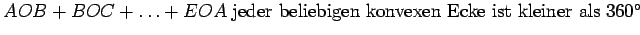

Eine Figur 0ABCDE, die von mehreren Ebenen, den Seitenflächen, gebildet wird, die ihrerseits einen gemeinsamen Punkt, die Spitze 0, haben und sich von hier ausgehend in den Geraden schneiden, heißt Ecke oder Vielflach.
Zwei Geraden, die eine Seitenfläche der Ecke begrenzen, schließen einen ebenen Winkel ein, während zwei benachbarte Seitenflächen eine Kante bilden. Ecken sind einander gleich, d.h., sie sind kongruent, wenn sie sich zur Deckung bringen lassen. Dazu müssen die einander entsprechenden Elemente, d.h. die Kanten und ebenen Winkel der Ecken, gleich sein. Wenn die einander entsprechenden Elemente von Ecken gleich, aber in umgekehrter Reihenfolge angeordnet sind, dann lassen sich die Ecken zwar nicht zur Deckung bringen, sie werden aber symmetrische Ecken genannt, weil sie in die in der folgenden Abbildung eingezeichnete symmetrische gegenseitige Lage zueinander gebracht werden können.
Eine konvexe Ecke liegt vollständig auf einer Seite jeder ihrer Kanten. Die Summe der ebenen Winkel  (s. obere Abbildung).